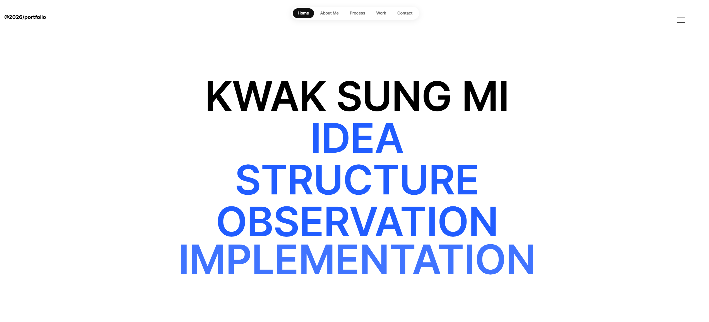
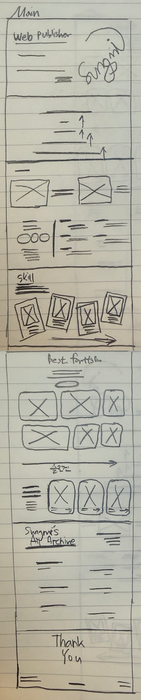
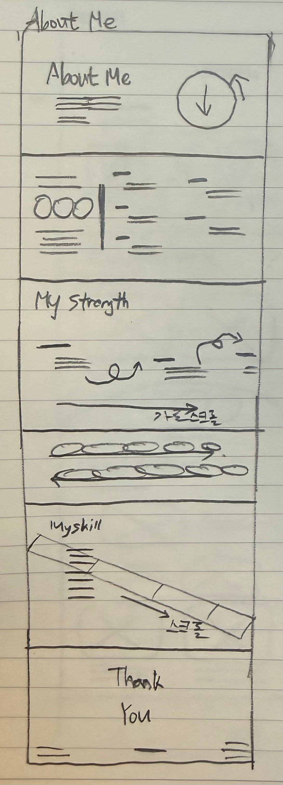
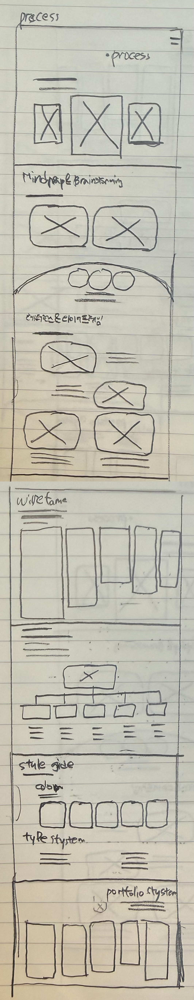
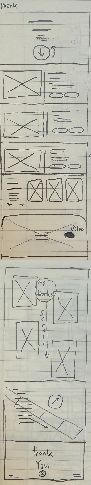
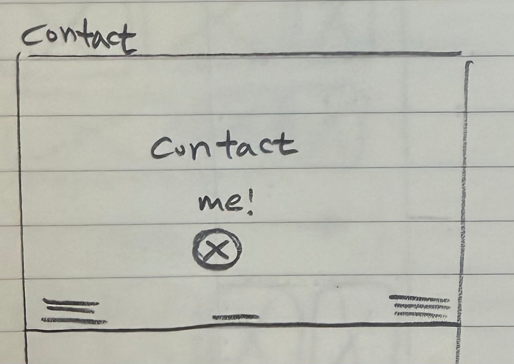
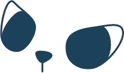

Portfolio Process
포트폴리오 작업의 전반적인 과정을 정리한 페이지입니다. 기획부터 디자인, 그리고 구현까지의 흐름을 단계별로 담았습니다.
This page outlines the overall process of my portfolio work. It presents each stage, from planning and design to implementation, step by step
포트폴리오 작업의 전반적인 과정을 정리한 페이지입니다. 기획부터 디자인, 그리고 구현까지의 흐름을 단계별로 담았습니다.
This page outlines the overall process of my portfolio work. It presents each stage, from planning and design to implementation, step by step
지금부터 저의 포토폴리오 제작과정을 소개합니다.


사이트 구성과 아이디어를 위해 작성한 마인드맵과 브래인스토밍 입니다.


연결하고, 확장하고, 구조화합니다.
해외 웹사이트 2곳을 참고하여 포트폴리오와 전반적인 프로세스를 레퍼런스를 활용하여 아이디어 스케치와 함께 구성하였습니다.

메인 페이지는 강한 타이포그래피와 간결한 레이아웃을 중심으로 구성하였습니다. 또한, 인터랙티브 모션 요소로 SVG 애니메이션을 적용하고 제 이름을 기반으로 디자인하여 포트폴리오의 아이덴티티를 직관적으로 전달하고자 하였습니다.

이전에 브레인스토밍에서 도출한 대표적인 성격 키워들를 5가지를 골라 사용자의 스크롤 액션에 따라 화면에 성격 키워드가 순차적으로 나타나도록 하였습니다. 이를 통해 웹페이지에 생동감과 역동성을 더할 수 있습니다.

전체 디자인은 절제된 컬러와 여백 중심의 레이아웃을 기반으로, 콘텐츠의 가독성과 전달력을 높이는 데 중점을 두었습니다. 강조가 필요한 부분에는 대비를 활용하여 시선을 집중시키고, 인터랙티브한 요소를 함께 적용하여 사용자와의 상호작용을 강화하였습니다.

페이지 전반에 스크롤 기반 인터랙션을 적용하여 사용자의 행동에 따라 콘텐츠가 자연스럽게 변화하도록 설계하였습니다. 단순한 정적 화면이 아닌, 사용자와 상호작용하는 흐름을 통해 웹사이트에 생동감과 차별화된 경험을 더하고자 하였습니다.
전체 페이지는 정보의 흐름을 고려하여 메인 → 소개 → 프로젝트 순으로 단계적으로 구성하였습니다. 각 섹션이 자연스럽게 이어지도록 구조를 설계하여 사용자가 흐름을 끊지 않고 콘텐츠를 탐색할 수 있도록 하였으며, 직관적인 구조를 통해 정보 전달의 효율성을 높였습니다.
와이어프레임을 소개하는 페이지입니다. 전체 구조와 레이아웃을 중심으로 화면의 흐름을 확인할 수 있도록 구성했습니다.





포토폴리오의 전반적인 틀을 구상하기 위해 정보구조도를 작성하였습니다. home, about, works , portfolio process ,contact 5개의 큰 인덱스로 구성했습니다.

디자인에 사용된 스타일 가이드를 정리한 페이지입니다. 컬러와 폰트, 캐릭터 로고를 통해 전반적인 디자인 방향과 기준을 확인할 수 있습니다.
깔끔한 인터페이스 구현을 위해 화이트 배경을 활용하였으며, 블루 컬러를 포인트 컬러로 적용하여 프레쉬한 분위기를 연출하였습니다.

가독성을 고려한 깔끔한 폰트를 사용하여 정보 전달이 명확하게 이루어지도록 하였으며, 전체적인 디자인의 통일감을 유지했습니다.



나를 나타내는 캐릭터 로고는 도장 형태의 원형으로 제작했습니다. 저의 눈을 모티브로 하여 저를 상징하는 이미지를 시각적으로 표현했습니다.
포트폴리오의 전반적인 모습을 미리 확인할 수 있는 페이지입니다.
전체적인 구성과 흐름을 한눈에 볼 수 있도록 정리했습니다.
CALL : 010-9421-6962
EMAILL : sungmi0131@naver.com
2026 portfolio
Kwak Sung Mi
PUBLISHER